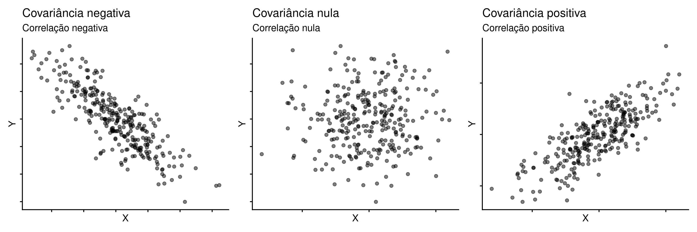
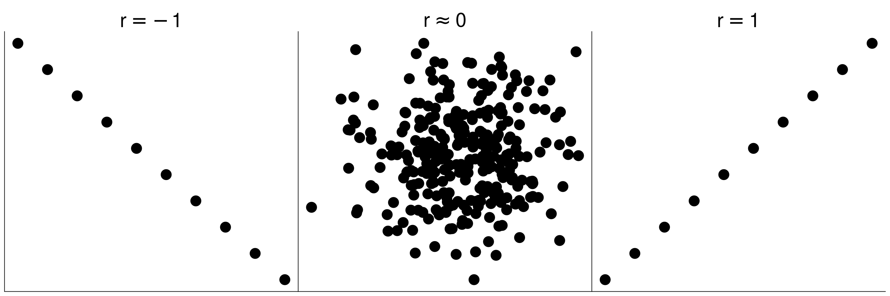

library(tidyverse)
library(gt)
library(patchwork)
library(mvtnorm)Associação entre duas variáveis quantitativas
Estatística
Análise quantitativa
Covariância
Correlação
Medidas de associação
Análise da associação entre variáveis quantitativas, com destaque para covariância e correlação de Pearson.
Pacotes e funções utilizadas no capítulo
Iremos medir o grau de associação entre duas variáveis quantitativas \(X\) e \(Y\) por meio dos coeficientes de covariância e correlação linear. Não estamos interessados em verificar se \(Y\) depende funcionalmente de \(X\) ou vice-versa. Estamos interessados somente em medir a intensidade de associação linear entre as duas variáveis. Ao calcularmos a covariância entre \(Y\) e \(X\) (\(s_{YX}\)), por exemplo, poderíamos inverter a ordem fazendo \(s_{XY}\) e teríamos exatamente os mesmo resultados. O mesmo vale para o coeficiente de correlação (\(r_{YX} = r_{XY}\)). Dizemos que existe uma simetria ao calcular estes coeficientes.
Estamos interessados em diferenciar três situações que podem ser visualizadas nos gráficos de dispersão abaixo:

1 Covariância entre \(Y\) e \(X\)
A variância amostral de \(Y\) pode ser obtida subtraindo cada observação em \(Y\) de sua média (\(\overline{Y}\)) e elevando esta subtração ao quadrado \((Y_i - \overline{Y})^2\). Ao somar para todos os valores de \(Y_i\) teremos o somatório dos quadrados de \(Y\) (\(SQ_Y\)).
\[SQ_Y = \sum_{i-1}^{n} (Y_i - \overline{Y})^2 = \sum_{i-1}^{n}(Y_i - \overline{Y}) (Y_i - \overline{Y})\]
Dividindo \(SQ_Y\) por \(n-1\) teremos a variância amostral de \(Y\) (\(s^2_Y\)).
\[s^2_Y = \frac{\sum_{i-1}^{n} (Y_i - \overline{Y})^2}{n-1}\]
A variância amostral é representada por \(s^2\). Aqui vamos usar a notação (\(s^2_Y\)), pois haverá outros estimadores de variância envolvidos, de modo que deveremos ser mais claros a respeito de qual estimador estaremos nos referindo.
Adotando o mesmo procedimento para \(X\), podemos calcular o somatório dos quadrados de \(X\) (\(SQ_X\)).
\[SQ_X = \sum_{i-1}^{n} (X_i - \overline{X})^2 = \sum_{i-1}^{n}(X_i - \overline{X}) (X_i - \overline{X})\]
e a variância amostral de \(X\) (\(s^2_X\)).
\[s^2_X = \frac{\sum_{i-1}^{n} (X_i - \overline{X})^2}{n-1}\]
Combinando as duas ideias, teremos o produto cruzado de \(Y\) e \(X\) (\(SQ_{YX}\))
\[SQ_{YX} = \sum_{i-1}^{n}(Y_i - \overline{Y}) (X_i - \overline{X})\]
e finalmente a covariância amostral entre \(Y\) e \(X\) (\(s_{YX}\)).
Covariância amostral
\[s_{YX} = \frac{\sum_{i-1}^{n}(Y_i - \overline{Y}) (X_i - \overline{X})}{n-1}\]
2 Coeficiente de correlação linear de Pearson \(r\)
Assim como a covariância, o coeficiente de correlação de Pearson (\(r\)) mede a intensidade da associação linear entre \(Y\) e \(X\). A covariância entretanto, não tem limite superior ou inferior, pois sua magnitude depende da ordem de grandeza das variáveis envolvidas. O coeficiente de correlação \(r\) é calculado como a covariância entre \(Y\) e \(X\) padronizada pelo produto dos desvios padrões de \(Y\) e de \(X\).
\[r = \frac{s_{YX}}{s_Y s_X} = \frac{\frac{\sum{(Y_i - \overline{Y})(X_i - \overline{X})}}{n-1}} {\sqrt{\frac{\sum{(Y_i - \overline{Y})^2}}{n-1}} \times \sqrt{\frac{\sum{(X_i - \overline{X})^2}}{n-1}}}\]
Coeficiente de correlação
\[r = \frac{\sum{(Y_i - \overline{Y})(X_i - \overline{X})}}{\sqrt{\sum{(Y_i - \overline{Y})^2 \sum{(X_i - \overline{X})^2}}}}\]
Esta padronização garante que \(r\) pode variar entre \(-1\) (correlação perfeitamente linear e negativa) e \(+1\) (correlação perfeitamente linear e positiva), se aproximando de zero quando não existe correlação.

3 Exemplo
A Tabela 1 apresenta dados da pesca do camarão tigre e do camarão rei entre nos anos de 1976 a 1987 (Haddon 2010). O camarão tigre constitui a espécie alvo da pesca, enquanto o camarão rei aparece como uma espécie acidental.
Importe a base de dados ctigre_haddon.csv
tigre = read_delim('https://raw.githubusercontent.com/FCopf/datasets/refs/heads/main/ctigre_haddon.csv')
rtk = cor(tigre$Tiger, tigre$King)
stk = cov(tigre$Tiger, tigre$King)| Ano | Camarão tigre | Camarão rei |
|---|---|---|
| 1976 | 566 | 10 |
| 1977 | 1437 | 22 |
| 1978 | 1646 | 42 |
| 1979 | 2056 | 33 |
| 1980 | 3171 | 64 |
| 1981 | 2743 | 34 |
| 1982 | 2838 | 59 |
| 1983 | 4434 | 146 |
| 1984 | 4149 | 78 |
| 1985 | 3480 | 75 |
| 1986 | 2375 | 81 |
| 1987 | 3355 | 52 |
Nas figuras abaixo temos as abundâncias das espécies ao longo dos anos e o gráfico de dispersão.
Código
c1 = ggplot(tigre, aes(x = Year)) +
geom_line(aes(y = Tiger), color = 'red') +
geom_point(aes(y = Tiger), color = 'red',
shape = 19, size = 4) +
geom_line(aes(y = King), color = 'blue') +
geom_point(aes(y = King), color = 'blue',
shape = 19, size = 4) +
geom_segment(x = 1976, xend = 1976.3,
y = 4000, yend = 4000,
color = 'red') +
geom_segment(x = 1976, xend = 1976.3,
y = 3700, yend = 3700,
color = 'blue') +
geom_text(x = 1976.4, y = 4000,
label = 'Camarão tigre', hjust = 0) +
geom_text(x = 1976.4, y = 3700,
label = 'Camarão rei', hjust = 0) +
scale_x_continuous(breaks = tigre$Year) +
labs(title = 'A',
y = 'Abundância (Ton)') +
theme_classic(base_size = 12)
c2 = ggplot(tigre, aes(y = King, x = Tiger)) +
geom_point(shape = 19, size = 4) +
scale_y_continuous(breaks = seq(0, 150, by = 20)) +
scale_x_continuous(breaks = seq(500, 5000, by = 500)) +
labs(title = 'B',
x = 'Camarão tigre (Ton)',
y = 'Camarão rei (Ton)') +
theme_classic(base_size = 12)
c1 | c2
A captura em toneladas do camarão tigre é sempre mais elevada. Entretanto, a figura da direita sugere haver uma associação linear entre as capturas. Nos anos em que houve maiores capturas do camarão tigre parece ter havido também um aumento nas capturas do camarão rei. Dizemos as capturas covariam positivamente. Portanto existe uma correlação positiva entre a captura das duas espécies.
Em nenhum momento estamos dizendo que a captura de uma espécie resulta no aumento na captura da outra. Muito provavelmente, as abundâncias das duas espécies estão relacionadas a um terceiro fator que gera um comportamento similar na variação das capturas ano a ano. Estamos interessados em mensurar o grau de associação seja pela covariância ou pelo coeficiente de correlação de Pearson.
a covariância entre as abundâncias dos camarões tigre e rei é positiva (\(s_{tigre-rei} = 3.3293\times 10^{4}\)) e consequentemente a correlação de Pearson também é positiva (\(r = 0.82\)). Confira os cálculos utilizando as expressões apresentadas no capítulo.
No R, a covariância entre \(Y\) e \(X\) pode ser obtida pela função cov:
cov(tigre$Tiger, tigre$King)[1] 33293E a correlação pela função cor:
cor(tigre$Tiger, tigre$King)[1] 0.8196913Referências
Haddon, Malcolm. 2010. Modelling and quantitative methods in fisheries. CRC press.